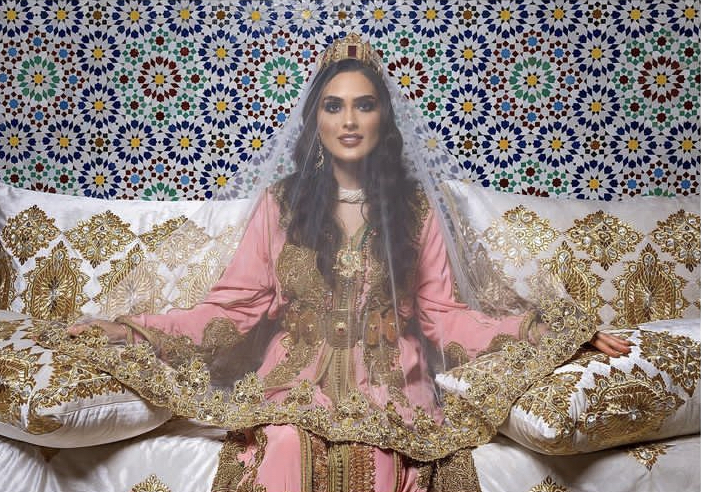

الملابس التقليدية
مازالت تستعمل الملابس التقليدية في الحفلات والمناسبات، وهي تعتمد اليوم أسلوبًا مبتكرًا.
جرب دون انتظار القفطان المغربي الشهير! النعال، هي أيضا رمز للملابس المغربية الأصيلة.
تتجلى هذه الموضة اليوم في تصميم الأزياء وتقديم العديد من المبدعين تصاميم خاصة بنماذج معاصرة

الجبس والزليج
أما الإبداعات الجصية، فهي مرئية، من بين أماكن أخرى، في الرياض. وهو عنصر أساسي في العمارة المغربية.
ومن الفنون المميزة الأخرى للمغرب: الزليج. في جميع أنحاء البلاد، يمكنك العثور على هذه الفسيفساء على الأشياء التقليدية أو المستخدمة في الإبداعات المبتكرة! عاصمة الزليج المغربي؟
إنها بلا شك مدينة فاس! قم بشراء العديد من العجائب في متاجرها الصغيرة النموذجية

الأواني النحاسية
في فاس ومراكش وتطوان، أصبحت الأدوات النحاسية في دائرة الضوء: الإطارات والأواني والمقارع والمصابيح والعديد من الأشياء الأخرى مصنوعة بدقة على النحاس أو الفضة أو النحاس الأصفر.
وقد استولى مصممون مغاربة معروفون ومعروفون دوليا على هذه القطع وهناك نسخ حديثة منها اليوم.